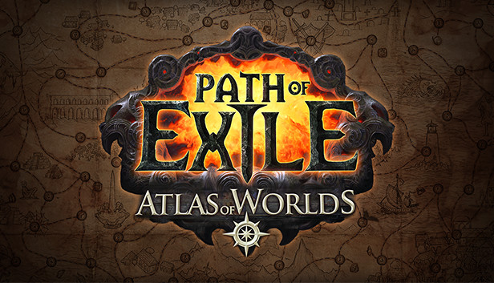

Path of Exile

Path of Exile - многопользовательская компьютерная игра в жанре Action/RPG, разработанная и выпущенная компанией Grinding Gear Games для Windows в 2013 году;
в 2017 году была выпущена версия для игровой приставки Xbox One, а в 2019 году — для PlayStation 4.
Игра распространяется по модели free-to-play и поддерживается с помощью микротранзакций, причем продаваемый за деньги контент не влияет на баланс игры и имеет, как правило, только декоративный эффект.
С точки зрения игрового процесса Path of Exile очень схожа с серией Diablo: игроку предлагается исследовать процедурно сгенерированные уровни вымышленного мира, используя различное оружие и навыки для уничтожения многочисленных врагов.
В 2015 году разработчики сообщали, что количество зарегистрированных в игре игроков превысило 11,5 миллионов.